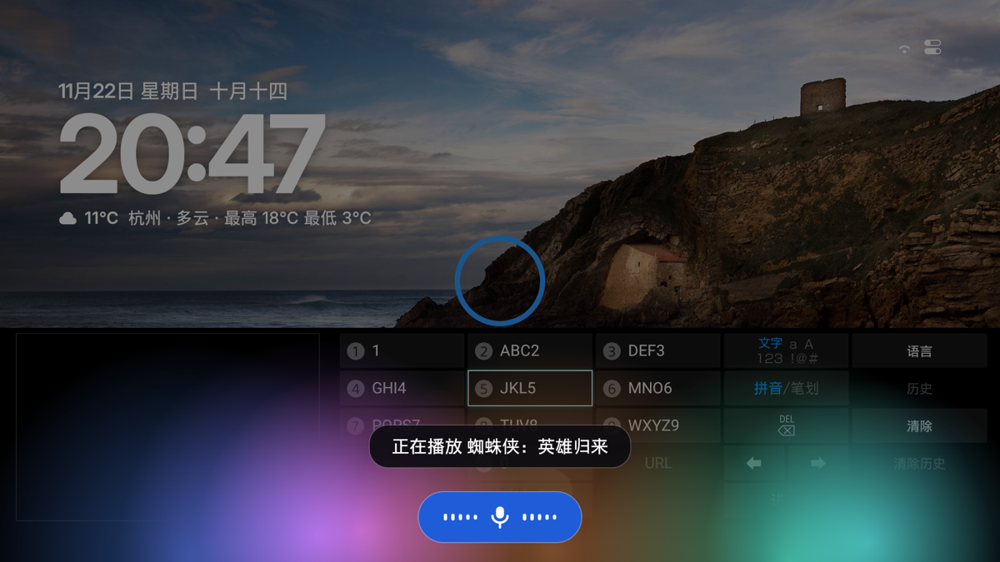
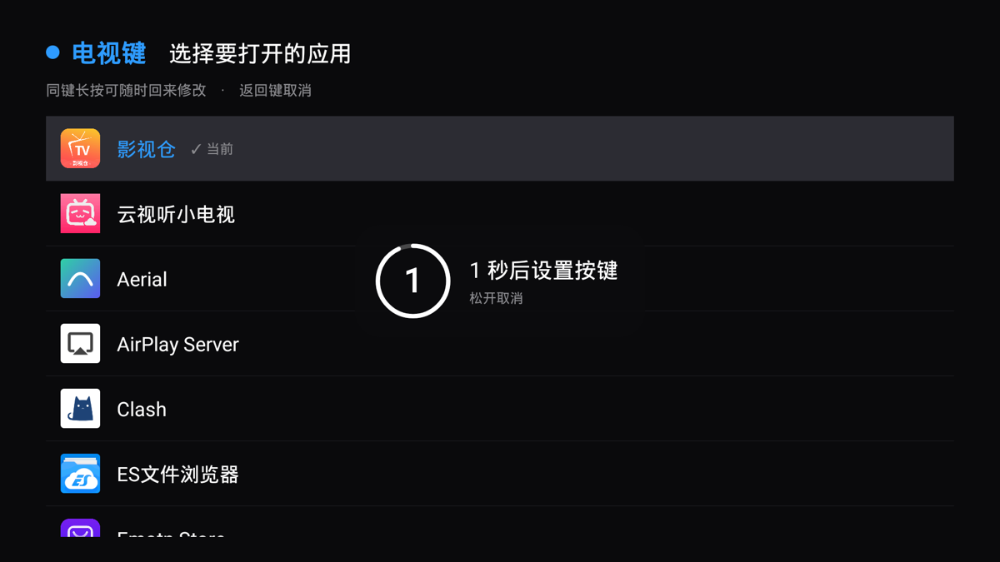
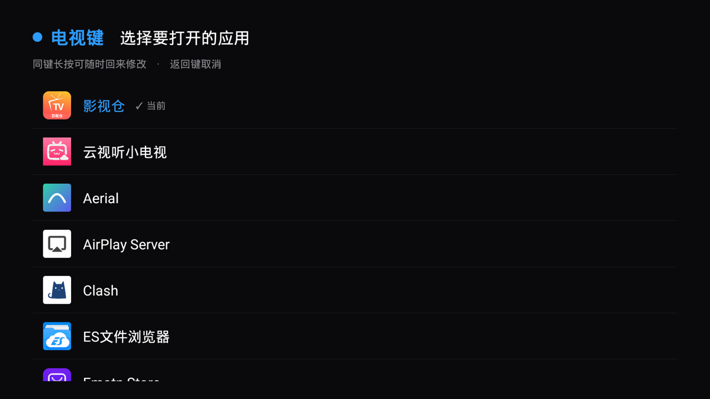
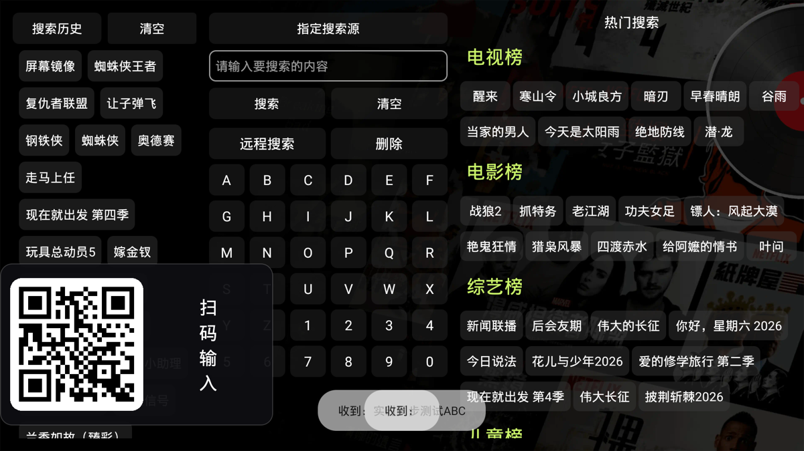
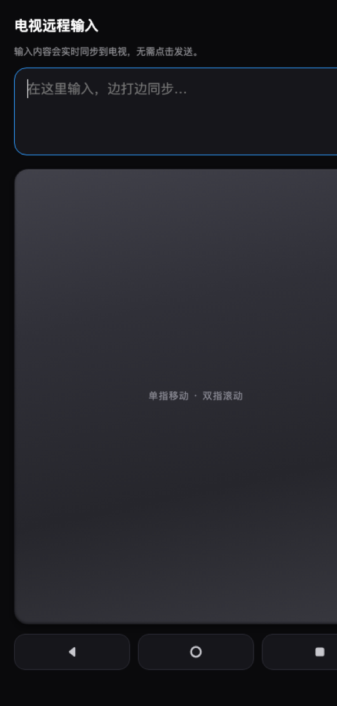
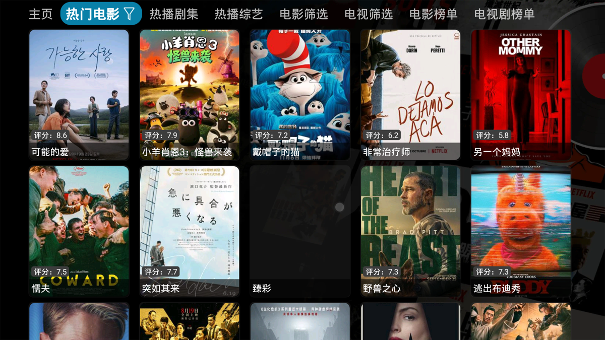

基于 Android AccessibilityService 的完整方案，全部功能在真机上跑通并截图验证。
| 项目 | 值 |
|---|---|
| 商品型号 | Sony BRAVIA XR-65X90J |
| 系统代号 | BRAVIA_VH2 / BRAVIA_VH2_M_CN（国行） |
| 芯片平台 | Valhalla_CHD · SONYANDROIDTV2021M5 |
| 系统版本 | Android 10（SDK 29） |
| 分辨率 | 1920 × 1080 |
理论兼容：Sony BRAVIA 2019–2023 年 Android TV 机型（X8000G ~ X95L），同代 MediaTek M5/M6 平台。
判断方法：adb shell getprop ro.product.device 输出含 BRAVIA_VH2 即高度兼容。
| 项目 | 参数 |
|---|---|
| 屏幕 | 65 英寸 4K（3840×2160）· 全阵列 LED |
| 整机尺寸（无底座） | 1452 × 834 × 72 mm |
| 重量（无底座） | 22.9 kg |
| VESA 孔距 | 300 × 300 mm |
| HDMI | 4 路（含 1 路 eARC） |
| 无线 | Wi-Fi 双频 · 蓝牙 4.2 · Chromecast · AirPlay 硬件支持 |
索尼标准语音遥控（随 XR-65X90J 附赠）· 黑色细长条 · 蓝牙连接 · 长约 19cm 宽约 4.5cm
| 按键 | 原始功能 | 改造后 |
|---|---|---|
| 🎤 语音键 | 索尼语音搜索 | 长按说话 → 自建语音助手 |
| TV 电视键 | 切电视频道 | 短按开影视仓 / 长按选应用 |
| 视频键 | 切视频输入 | 短按开云视听 / 长按选应用 |
| i+ 屏显键 | 显示信号信息 | 同时切换二维码面板 |
| ⌂ 主页键 | 回主页 | 长按清后台 + 彩带特效 |
| 按键 | 键码 | 点按 | 长按 |
|---|---|---|---|
| 语音键 | SEARCH 84 | — | 按住说话，松手识别 |
| 电视键 | TV 170 | 打开绑定应用（默认影视仓） | 2 秒倒计时 → 应用选择器 |
| 视频键 | VIDEO 203 | 打开绑定应用（默认云视听小电视） | 2 秒倒计时 → 应用选择器 |
| 屏显键 | INFO 165 | 二维码面板显示/隐藏 | 同点按 |
| 主页键 | HOME 3 | 系统默认 | 清理后台 + 彩带特效 |






长按语音键说话，识别后填入输入框或执行指令。支持打开应用、调音量、影视搜索、卸载等。
电视/视频键可自由绑定应用，短按打开、长按 2 秒重选。已在前台时不重复启动。
长按主页键清理后台，完成时洒下 34 片粉色彩带。
按屏显键弹出二维码，手机扫码后打字，电视输入框实时同步，无需点发送。
触摸板单指移动、轻点单击、长按、双指滚动，底部三大导航键。
识别器忙重试、引擎心跳重建、连按保护、1.2 秒兜底收起、长按锁键。
| 能力 | 实现 |
|---|---|
| 按键拦截 | onKeyEvent + flagRequestFilterKeyEvents |
| 语音识别 | SpeechRecognizer 调索尼私有 VoiceRecognitionService |
| 文字填入 | ACTION_SET_TEXT |
| 光标/点击 | 全屏 Overlay + dispatchGesture |
| 手机通信 | 内置 ServerSocket HTTP 服务（8080） |
| 二维码 | zxing-core 本地生成 |
canRequestFilterKeyEvents="true" 拦截遥控器按键canPerformGestures="true" 模拟点击滑动canRetrieveWindowContent="true" 读取界面结构
电视硬件支持 AirPlay 2（规格表标注 APPLE AIRPLAY: Yes），但国行固件未内置接收端。
方案：装开源的 android-airplay-server（io.github.jqssun.airplay v0.0.36）。
| 项 | 说明 |
|---|---|
| 原理 | 电视上跑 AirPlay 接收服务（RTSP + H.264 解码） |
| 依赖 | root（su）+ setenforce 0 |
| 连接 | iPhone 控制中心 → 屏幕镜像 → 选电视 |
| 语音联动 | 说「打开隔空播放」即可启动 |
| 短板 | 4K 降采样到 1080p · 首次握手 2-3 秒 · iOS 17+ 需重新配对 |
| 问题 | 应对 |
|---|---|
卸载重装后网络被切断（EPERM） | standby bucket 掉到 5，再次重装可重置为 50 |
重装丢录音权限（code=9） | pm grant RECORD_AUDIO |
| 重装丢悬浮窗权限 | appops set SYSTEM_ALERT_WINDOW allow |
| 影视仓用自定义键盘 | 改判界面是否有「请输入」提示 |